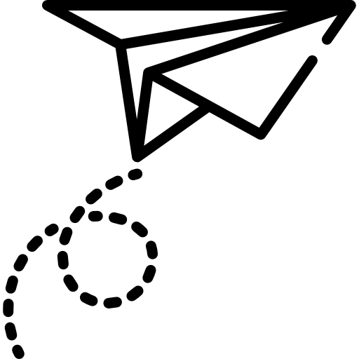

{{getUserName(getSelfProfile())}}
{{connection_status}}
{{ui.userList.archivedTitle}}
{{ui.userList.archivedTitle}}
{{getArchivedCount()}}
{{getEmptyChatListMessage()}}
Select a Contact
You have no existing contacts

{{getUserName(u)}}
{{getUserStatus(u)}}
{{display_profile.isSelfProfile() ? 'Edit profile' : (display_profile.getGroupId() > 0 ? 'Group info' : 'Contact info')}}
{{getProfileLetter(display_profile)}}
{{getUserName(display_profile)}}
+{{display_profile.getAddress()}}
Group · {{membersList.length}} members
{{getLastSeen(display_profile)}}
About
{{getUserStatus(display_profile)}}
{{ui.disappearing.title}}{{getChatDisappearingSummary(display_profile)}}
{{membersList.length}} members
{{getUserName(u.getProfile())}}
{{getMemberType(u)}}
{{isArchived(display_profile) ? ui.userList.unarchiveTitle : ui.userList.archiveTitle}}
{{isBlocked(display_profile) ? 'Unblock' : 'Block'}} {{getUserName(display_profile)}}
Delete all messages
{{getProfileLetter(display_profile)}}
Change photo
{{profile_photos.length}} of {{MAX_PROFILE_PHOTOS}} photos. Tap a photo for options.
Name
About
Phone
+{{display_profile.getAddress()}}
{{ui.disappearing.title}}
{{ui.disappearing.helpMessage}}
{{ui.disappearing.durationTitle}}
{{ui.disappearing.timerStartTitle}}
Forward Message to..
You have no existing contacts

{{getUserName(u)}}
{{getUserStatus(u)}}
{{getUserName(selected_user)}}
{{ getUserActivity(selected_user)}}
{{selected_user.getGroupId() > 0 ? 'Group info' : 'View profile'}}
{{ui.disappearing.title}}
{{isMuted(selected_user) ? ui.userList.unmuteTitle : ui.userList.muteTitle}}
{{isFavorite(selected_user) ? ui.userList.unfavoriteTitle : ui.userList.favoriteTitle}}
{{isArchived(selected_user) ? ui.userList.unarchiveTitle : ui.userList.archiveTitle}}
{{isBlocked(selected_user) ? 'Unblock' : 'Block'}}
Delete all messages

{{ getMessageHeader(m) }}
{{getSenderNameFromMessage(m)}}
{{m.title}}
Description
{{hostnameFromUrl(m.launchurl)}}
{{ui.sensitivity.title}} · {{ui.sensitivity.tapToViewTitle}}
{{getMessageText(m)}}
{{getMessageTime(m)}}
{{getMessageText(m)}}
{{link_preview.title}}
{{link_preview.description}}
{{link_preview.hostname}}
{{ui.messageOptions.title}}
{{ui.messageOptions.ageTitle}}
{{ui.messageOptions.timerStartTitle}}
{{ui.messageOptions.expiryTitle}}
{{ui.messageOptions.sensitivityTitle}}
{{selectedSensitivityDetail()}}
Mesibo Open Source Messenger
Login
Add a Contact
{{call_alert_message}}
{{is_video_call ? 'Video Call' : 'Voice Call'}}
Decline
Answer
{{getUserName(selected_user)}}
{{call_status}}
{{getUserName(selected_user)}}
{{call_status}}